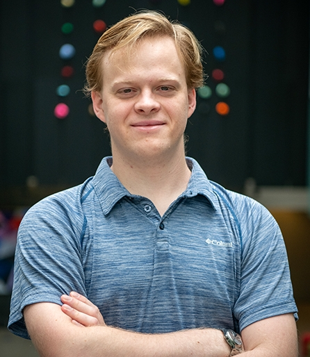

About the Quantum Formal Initiative (QFormal)
QFormal is an effort led by Alex Meiburg, Leonardo Lessa, and Rodolfo Soldati at the University of Waterloo and the Perimeter Institute for Theoretical Physics.
We focus on formalizing quantum information theory in Lean 4. PLACEHOLDER for more details about our mission, goals, and current projects.
Institutions
Team

Alexander Meiburg -
Website
Alexander is a postdoc at the Perimeter Institute and IQC. He completed his PhD at the University of California, Santa Barbara under the supervision of Bela Bauer. He also works with
Harmonic building AI for Lean.
Leonardo A. Lessa -
Website
Leonardo is a PhD student at Perimeter supervised by Chong Wang & Timothy Hsieh.
Rodolfo Soldati -
Website
Rodolfo is a postdoctoral researcher at the Perimeter Institute and IQC. He completed his PhD jointly at University of Stuttgart and the University of São Paulo, and under the supervision of Eric Lutz and Gabriel Landi.